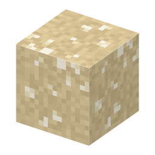

説明
①子ども 砂漠の湖が干上がったあとに残った塩。砂漠の砂や砂岩の中にある。
③大人 出口のない砂漠の湖は水が蒸発して減るだけなので、溶けていた塩が層になってたまる（炭酸塩→硫酸塩→岩塩の順）。エジプトのワディ・エル・ナトルーン（ナトロンの谷）が「ナトロン」の名の由来。
④ガチ 世界最大のトロナ層はアメリカ・ワイオミング州のグリーンリバー層。約5000万年前（始新世）の湖の跡で、1938年に石油を掘っていて見つかった。今のアメリカのソーダ灰はほとんどここから掘り、ソルベー法では作っていない。
作り方
（作り方のレシピは無い：拾う・掘る・ほかの方法）
使い道
（このアイテムを使うレシピは無い）